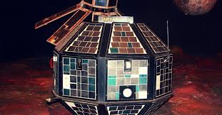
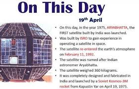

Science
Subject-wise Description of India (Bharat)
Aryabhata was India’s first satellite,..
 named after a ancient Indian mathematician (5th century AD). Launched from Kapustin Yar, Russia by a Soviet Kosmos-3M rocket. Named after the famous Indian astronomer Aryabhata from the 5th century AD. Designed and built in India by the Indian Space Research Organization (ISRO). Conducted experiments in and gamma rays from the Sun, and explored conditions in Earth's ionosphere. It had a 96.3 minute orbit. Reentered Earth's atmosphere on February 11, 1992 and was destroyed.
It helped lay the foundation for India's space program. It also Established a space program, Built infrastructure, Generated manpower, The success of the mission boosted the confidence of Indian scientists and engineers. The satellite collected valuable data on Earth's ionosphere, neutrons, gamma rays, and X-ray sources. As well inspired later generations of Indian space scientists and engineers The Aryabhata satellite was a landmark moment in India's history, making it the 11th country to send a satellite into orbit.